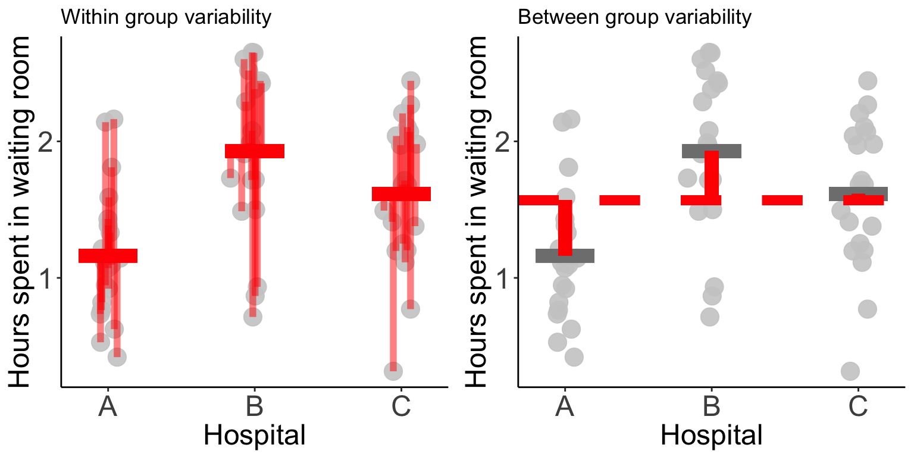
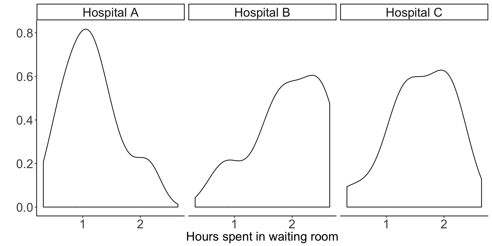

Last week, practical statistics met to discuss all things ANOVA. Below you will find the slides from my talk, but read on if you would like to learn all about ANOVA.
When ANOVA is used and who uses it?
ANOVA is used far and wide by the scientific community and beyond. Unfortunately, scientists also frequently misuse ANOVA. A study by Wu et al. (2011) showed that from a survey of 10 leading Chinese medical journals in 2008, 446 articles used ANOVA, and of those articles, 59% of them used ANOVA incorrectly.
In this post, I will describe the general framework for ANOVA, the assumptions it requires, and many common pitfalls. While I will introduce a few equations, I will not provide extensive details or derivations. Instead, I will focus on developing intuition for why these equations make sense for the type of problem at hand.
Let’s start by getting an idea of what kind of questions one can answer using ANOVA. Three examples are presented below.
Is there a difference between the average number of times articles are shared on social media based on day of the week?
Is there a difference in average waiting room times for a set of 3 different hospitals?
Does the presence of other people have an influence on the amount of time taken for a person to help someone in distress?
The third question is not like the others; can you see why? The first two questions are asking about a difference between mean values of some outcome (article shares or waiting room time) across multiple groups (day of week or hospital). The last question, however, does not seem to satisfy this criteria: while it has a clear outcome (amount of time taken for a person to help someone in distress), it has no obvious groupings.
Darley and Latané (1969) used ANOVA to answer the question of whether the presence of other people had an influence on the amount of time taken for a person to help someone in distress by setting up an appropriate experiment. In doing so, they were the first to demonstrate the “bystander effect”.
In their experiment, the experimenter had the subject wait in a room with either 0, 2, or 4 other individuals. The experimenter announces that the study will begin shortly and walks into an adjacent room. In a few moments the people in the waiting room hear her fall and cry out. The outcome variable is the number of seconds it takes the subject to help the experimenter, and the grouping variable is the number of other people in the room (0, 2, or 4).
Given these examples, the definition of ANOVA provided in the following paragraph shouldn’t come as much of a surprise.
ANOVA in a nutshell
ANalysis Of VAriance (ANOVA), is a widely used method designed for comparing differences in means among three or more groups.
For example, we might be interested in comparing the average waiting times in the emergency rooms of three different hospitals. Or perhaps we have conducted a clinical trial comparing the effectiveness of five different drugs for reducing blood pressure.
The key is that each individual falls into a group described by a (categorical) grouping variable (e.g. hospital or drug group) and for each individual we measure some continuous outcome (e.g. waiting time or blood pressure).
Although there are multiple types of ANOVA, the simplest (“one-way” ANOVA) can be thought of as a generalization of a two-sample t-test. One-way ANOVA involves testing the omnibus hypothesis that k population means are identical:
\[H_0: \mu_1 = \mu_2 = ... = \mu_k.\]
Note that the two-sample t-test tested the hypothesis that two population means are equal (i.e. k = 2).
The alternative hypothesis for ANOVA states that any one of the population mean equalities does not hold:
\[H_1: \mu_i \neq \mu_j~~ \text{ for some } ~~i \neq j.\]
It is important to note that a rejection of the null hypothesis does not tell you which of the population means differ. It only tells you that there is some population whose mean is different from at least one other population (it could be that all of the means are different from one another!)
A simple toy example: hospital waiting times
Suppose that we have three hospitals, let’s call them A, B and C (creative names, I know). We are interested in whether all three hospitals have the same the average waiting time for the emergency room.

Figure 1: Three hospitals: A, B and C.
We measured the waiting time for 20 unique individuals at each of these three hospitals (so there are 60 individuals in total). These waiting times (in hours) are recorded below.
## Warning: package 'dplyr' was built under R version 3.5.1| Hospital A | Hospital B | Hospital C |
|---|---|---|
| 1.8 | 0.9 | 1.4 |
| 1.4 | 0.7 | 2.1 |
| 0.7 | 2.6 | 1.4 |
| 0.8 | 1.7 | 1.2 |
| 0.5 | 2.5 | 2.1 |
| 2.1 | 2.4 | 2.3 |
| 0.9 | 2.4 | 1.7 |
| 2.2 | 2.3 | 1.2 |
| 1.2 | 2.0 | 1.1 |
| 1.3 | 1.7 | 1.3 |
| 1.1 | 2.1 | 0.3 |
| 1.1 | 0.9 | 1.7 |
| 0.4 | 2.7 | 1.5 |
| 1.4 | 1.5 | 1.7 |
| 0.8 | 2.0 | 2.0 |
| 1.1 | 1.9 | 0.8 |
| 0.6 | 2.6 | 2.0 |
| 1.1 | 2.4 | 2.4 |
| 1.6 | 1.5 | 2.2 |
| 0.9 | 1.7 | 2.0 |
As pictures tend to be more informative than tables, we present a plot of these waiting times below. To aid the visualization, the x-position of each point is jittered to gently increase the space between the points.
Most people seem to wait over an hour, with some unlucky individuals waiting for almost 3 hours. The mean waiting time for each hospital is highlighted by a red bar.

The question of interest is whether or not the average waiting time for each of the three hospitals is the same. This question might be naively interpreted as: “are the red bars at the same height?”, i.e. is there a difference between the waiting times for the sample of 20 patients from each hospital. The intended question is actually asking about equality between the average waiting times from the population of all patients who have ever, and will ever, wait in these waiting rooms, regardless of whether they fall in our sample.
Although the sample means clearly aren’t identical (the red bars are all at different heights), do we have enough evidence to show that the underlying population waiting time means are different, or are the differences that we observe are simply reflection of the inherent noise in the data?
This is the question that lies at the heart of hypothesis testing.
Why is ANOVA called “Analysis of Variance”?
What does comparing means have to do with variability?
Quite a lot it turns out… simply by asking “are the means different”, we are essentially asking a question about whether the variance of the means is large. However, the variability that we observe between the means themselves only makes sense relative to the overall variance in the data. For example, if the individual observations themselves are extremely variable, then it might be reasonable to expect that the observed group-specific averages might exhibit some variance (even if the underlying true averages are identical).
There are two types of variance at play here:
within-group variability: the variance of the individual observations within a group, and
between-group variability: the variance between the averages of the groups.
In the figure below, the red bars in the left panel highlight the within-group variance, while the red bars in the right panel highlight the between-group variance.

The basic idea is that if the variability between the groups is greater than the variability within the groups, then we have evidence that the differences between the groups is not simply reflecting random noise.
Quantifying the within and between group variability is typically done by calculating a mean sum of squares: add up the squared vertical distances and divide by the degrees of freedom.
This means that we are comparing the
- between sum of squares (BSS): the squared distances from the group means (average over all individuals separately for each hospital) to the global mean (average over all individuals),
to the
- within sum of squares (WSS): the squared distances from each individual to their group mean (average over all individuals within the same hospital).
Using this idea we can formulate a test statistic:

To spell it out mathematically, we can write these expressions as follows:
\[WSS =\sum_{i = 1}^K \sum_{j = 1}^{n_i} (y_{ij} - \overline{y}_{i\cdot})^2 ~~~~~ \text{ and } ~~~~~ BSS = \sum_{i=1}^K (\overline{y}_{\cdot \cdot} - \overline{y}_{i\cdot})^2\]
where \(y_{ij}\), defines the waiting room time (outcome) for patient \(j\) from hospital \(i\), \(\overline{y}_{\cdot \cdot}\) defines the global average waiting time and \(\overline{y}_{i \cdot}\) defines the average waiting time for hospital \(i\). \(K\) is the number of hospitals, and \(n_i\) is the number of patients sampled from hospital \(i\).
Note that in the test statistic above, each quantity is scaled by its degrees of freedom, which when comparing the groups is the number of groups minus 1 (\(K-1\)), and when comparing individuals is the number of individuals minus the number of groups (\(N-K\)).
What assumptions are required?
If our data satisfies a few parametric assumptions, then we can show that this test statistic follows an \(F\) distribution and we can do a straightforward parametric hypothesis test:
\[\text{p-value} = P\left(F_{K-1, N-k} \geq \frac{BSS/(K-1)}{WSS/(N-K)}\right).\]
These assumptions are as follows
Assumption 1: The samples are independent.
Independence is an extremely common assumption that is hard to test in general.
Assumption 2: The data are normally distributed.
Not being a fan of such distributional assumptions myself, I am inclined to point the reader in the direction of non-parametric versions of ANOVA, including the Kruskal-Wallis test, however since this is a blog post about ANOVA, we will leave non-parametric readings to the interested parties. Those wishing to test the normality of their data can do so using a variety of methods such as plotting a QQ-plot, or using a normality test (see the Wikipedia page on normality tests).
Assumption 3: Each group has the same variance.
The common variance assumption can be tested using common tests, such as the Bartlett test and the Fligner-Killeen test, which are easily implemented in R.
Working through our waiting times example
Let’s examine these assumptions for our Hospital waiting times example.
Unfortunately, independence is hard to judge statistically, but if, for example, each person was randomly selected from a splattering of visitors to the waiting room at different times (rather than, e.g. selecting 5 members of the same family all of whom came to the hospital together in some freak accident), then the assumption of independence is probably ok.
The figure below plots the density estimation for the waiting times from each hospital. We know that if our data is normally distributed, it should look vaguely like a bell-curve.

One might argue that these are some pretty funky-looking bell-curves…
However, as I was the one who simulated this data in the first place, I can assure you that they are in fact normally distributed, and you can use this as a lesson on the difficult of drawing conclusions on normality from small samples (in this case, we have 20 observations in each group).
A Shapiro-Wilk test for normality provides p-values of 0.39, 0.087, 0.52 for hospitals A, B and C, respectively. Although none of these values are “significant” (even unadjusted for multiple testing), we have stumbled upon another lesson: small p-values (\(p = 0.087\) for hospital B) can certainly occur when the null hypothesis is true (in this case, the null hypothesis is that the data are normally distributed)! Remember that when the null hypothesis is true, p-values are uniformly distributed.
Finally, based on a visual assessment, the common variance assumption is probably fairly reasonable (and, again, since I simulated this data, I can confirm that the variance is the same for each hospital).
To test this formally, Bartlett’s test for homogeneity of variances yields a p-value of 0.68, indicating that we do not have evidence that the variances are different.
We have now concluded that the assumptions for ANOVA are satisfied, and can proceed to do our calculations.
Calculating the between-sum-of-squares (BSS) and scaling by the degrees of freedom (the number of groups minus 1), and the within-sum-of-squares (WSS) and scaling by the degrees of freedom (the number of observations minus the number of groups), we get that
\[\frac{BSS}{K - 1} = \frac{5.94}{3 - 1} = 2.97 ~~~~~~ \text{and} ~~~~~ \frac{WSS}{N - K} = \frac{16.96}{60 - 3} = 0.30.\]
Our test statistic turns out to be quite large indeed:
\[F = \frac{BSS/(K-1)}{WSS/(N-k)} = \frac{2.97}{0.3} = 9.98.\]
Since we are confident that the ANOVA assumptions are satisfied, this F-statistic must follow an F distribution with suitable degrees of freedom. Our p-value can thus be calculated as follows:
\[P(F_{2, 53} \geq 9.98) = 0.000192\]
And we can claim to have evidence that the three group means are not all identical. Note that we can interpret this as the distances between the group means and the global mean is quite large relative to the distances between the individual observations and the group means. Recall that these distances are scaled by their respective degrees of freedom.
Rather than conducting these calculations by hand, in R, one could simply use the aov() function:
summary(aov(time ~ hospital, data = data))## Df Sum Sq Mean Sq F value Pr(>F)
## variable 2 5.938 2.9688 9.981 0.000192 ***
## Residuals 57 16.955 0.2975
## ---
## Signif. codes: 0 '***' 0.001 '**' 0.01 '*' 0.05 '.' 0.1 ' ' 1obtaining the same p-value.
ANOVA as a linear model
So far we have discussed ANOVA purely as a hypothesis test comparing two different types of variability. It is, however, more common to talk about ANOVA as a linear model.
The anova linear model can be written as follows:

\(\mu\) represents the overall average wait time across all hospitals, and \(\tau_i\) represents the amount of time that is either added or subtracted from the overall average as a result of being at hospital \(i\). To get the average wait time for hospital \(i\) we can calculate \(\mu_i := \mu + \tau_i\).
Finally, \(\epsilon_{ij}\) represents the “noise” term; the quantity that defines how the waiting time for individual \(j\) differs from the mean (within their group).
We typically assume that the expected value (the average over the population) for \(\epsilon_{ij}\) is equal to zero, and that the \(\tau_i\)s add up to zero. Note that if we do not assume that \(\tau_i\)s sum to zero, then the model is “over-parametrized” in that there would be an infinite number of ways to define the \(\mu\) and \(\tau_i\)s such that they add up to the group mean \(\mu_i\).
The question that is sure to be on the edge of your tongue is “how is this possibly equivalent to the hypothesis test discussed above?”
The answer is simple and can be summarized by the diagram below.

Specifically, if the hospital-specific effects \(\tau_A, \tau_B,\) and \(\tau_C\) are all equal to zero, then the average effect across all groups is the same: \(\mu_A = \mu_B = \mu_C = \mu\).
Common pitfalls of ANOVA and alternative approaches
Despite its perceived simplicity, scientists frequently misuse ANOVA. A study by Wu et al. (2011) showed that from a survey of 10 leading Chinese medical journals in 2008, 446 articles used ANOVA, and of those articles, 59% of them used ANOVA incorrectly.
Below we will discuss many of the common pitfalls.
Using one-way ANOVA when there is more than one grouping variable
Suppose that instead of solely measuring waiting times from emergency waiting rooms at each hospital, we instead measured the waiting times from three medical departments from each hospital: surgery, pediatrics, and dentistry.

In this scenario we should adapt the model to take the second grouping variable into account. This is called two-way ANOVA, and the model can be adapted as follows:
\[y_{ijk} = \mu + \tau_i + \gamma_j + \beta_{ij} + \epsilon_{ijk}\]
where \(\tau_i\) represents the hospital-specific effect on waiting time and \(\gamma_j\) represents the department-specific effect. \(\beta_{ij}\) represents an interaction term between these two effects.
Another adaptation of ANOVA when the second grouping variable (medical department) is not the same across each hospital is called nested ANOVA (see fig below). For example, perhaps we are comparing both hospitals and medical departments, but we are not examining the same medical department in each hospital.

Conducting ANOVA multiple times for multiple outcomes
Suppose that instead of simply being interested in whether there is a difference between waiting time for each hospital, we were also interested in differences in average length of hospital stay and cost of visit. Then the incorrect way to proceed would be to generate three separate ANOVA models and draw our conclusions separately for each model. This reeks of multiple testing issues and does not take into account any dependence between the different outcome variables.
Instead, one should use Multivariate Analysis of Variance (MANOVA), which can be written as follows:
\[ \left[\begin{array}a y_{ij1} \\ y_{ij2} \\ y_{ij3} \end{array} \right]= \mu + \tau_i + \epsilon_{ij}\] where
- \(y_{ij1}\) is the waiting time for individual \(j\) from hospital \(i\),
- \(y_{ij2}\) is the length of hospital stay for individual \(j\) from hospital \(i\), and
- \(y_{ij3}\) is the cost of the visit for individual \(j\) from hospital \(i\).
Incorrectly conducting multiple pair-wise comparisons following ANOVA
Upon obtaining a “significant” ANOVA p-value, a common mistake is to then go and test all of the pairwise differences to identify which of the populations had different means. This is another example of multiple hypothesis testing, and corrections on these p-values must be made. See the Wikipedia page for details on this common issue.
Using ANOVA to analyse repeated-measures data
What if, instead of having measured the waiting room times on a different set of 20 people at each hospital (left-panel in fig below), we instead measured the waiting room times on the same set of 20 people at each hospital (right-panel in fig below)?

We have certainly violated the assumption that our observations are independent. Fortunately, repeated measures ANOVA (rANOVA) is a method for exactly this situation.
Basically, rANOVA simply splits the within sum of squares into the individual-level sum of squares and the random error sum of squares. An excellent article describing rANOVA can be found here. A common repeated measures experimental design involves observations being made at different time points (as opposed to at different hospitals).
According to the Wikipedia article,
rANOVA is not always the best statistical analysis for repeated measure designs. The rANOVA is vulnerable to effects from missing values, imputation, unequivalent time points between subjects and violations of sphericity. These issues can result in sampling bias and inflated rates of Type I error. In such cases it may be better to consider use of a linear mixed model.
Freqently asked questions
Can I use ANOVA if my data violates the assumption of common variances?
According to this post on Stats Stack Exchange, if the sample size in each group is similar, and the difference between variance isn’t too bad, you should be ok.
According to user gung, with similar group sizes there is a rule of thumb that states that
ANOVA is robust to heterogeneity of variance so long as the largest variance is not more than 4 times the smallest variance.
I’ll admit that I haven’t checked this claim, but I’d be willing to believe it.
If, however, your data has wildly different group variances or varying group sizes, then I’m not entirely sure of what options exist (note that the non-parametric alternative also assumes that the population variances are similar).
If my data are not normal, can I simply transform it and draw the conclusions as normal?
Yes, probably.
How does the ANOVA for model comparison work?
It is common to use the anova() function in R to compare two different models. Specifically, it compares nested models wherein one model consists of a subset of the set of variables of the other model.
Note that the use of the word “nested” here has nothing to do with the nested anova discussed above in which the grouping variables themselves (rather than the models) were nested.
The comparison being made by ANOVA in this situation is whether the residual sum of squares (which is essentially the within sum of squares from one-way ANOVA) for model 1 (the larger model) is larger than the residual sum of squares for model 2 (the smaller model).
Specifically, it calculates the F-statistic
\[F = \frac{(RSS_{\text{model 2}} - RSS_{\text{model 1}})/(p_1 - p_2)}{RSS_{\text{model 1}}/(n - p_1)}\]
The idea is that since model 2 is a special case of model 1, model 1 is more complex so \(RSS_{\text{model 2}}\) will always be as least as large as \(RSS_{\text{model 1}}\). The question is whether the difference is “statistically significant”.
Note that if you call the anova() function with a single model, it will compare the first variable in the model to a baseline model with no predictors. If there is a second variable, it compares the model with both variables against the model with just one variable, and so on and so forth.
See this set of slides by James Steiger if you’re interested in further details.
The end…
While this post has only scratched the surface of all things ANOVA, I hope that you have developed a general intuition for how ANOVA works, what assumptions are needed to make things go, and common pitfalls to avoid.